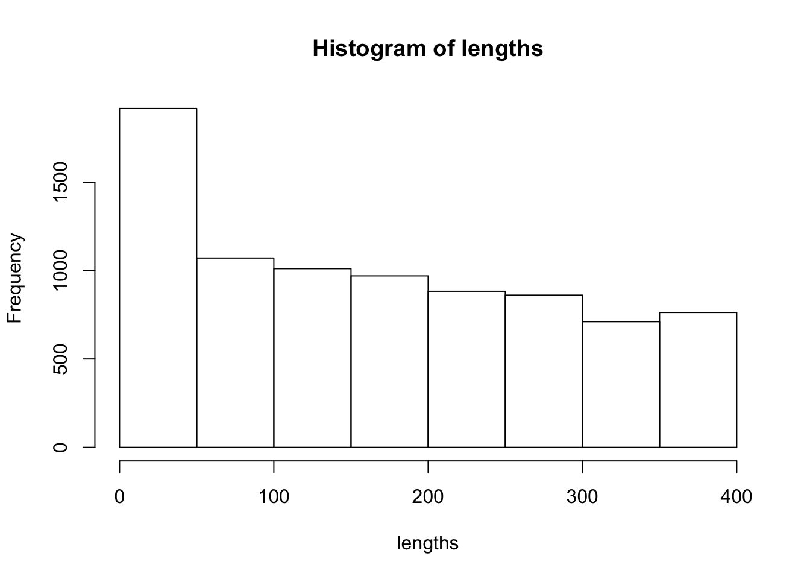

Fiber tractography
Jeffrey T. Duda
2019-04-12
tracking.Rmd
grad = read.table(get_dti_info_filenames()[1]$fname[1])
dwi = antsImageRead(get_dti_filenames()[1])
mag = apply(as.matrix(grad), 1, function(x) sqrt( x[1]*x[1] + x[2]*x[2] + x[3]*x[3] ) )
b0Ids = which( mag == 0 )
grad=as.matrix(grad[1:33,])
bvalues = c(rep(1000,32),0)
grad = cbind(grad, bvalues)
grad[,3] = -grad[,3]
d = dim(dwi)
d[4] = 33
b0 = cropIndices(dwi, c(1,1,1,33), d)
b0 = as.array(b0)
dim(b0) = dim(b0)[1:3]
b0 = as.antsImage(b0, spacing=antsGetSpacing(dwi)[1:3])
dwi = cropIndices(dwi, c(1,1,1,1), d)
dwi = dimensionToChannel(dwi)
dt = dtiReconstruction(dwi, grad, method="itk-svd")
mask = getMask(b0)
fa = dtiAnisotropy(dt, method="fractionalanisotropy")
seedMask = fa*0
seedMask[ fa > 0.3 ] = 1
seedMask = seedMask * mask
eig = dtiEigenSystem(dt)
seeds = labelsToPoints(seedMask)
nSeeds = antsrMeshGetNumberOfPoints(seeds)
seeds = antsrMeshCreate( points=antsrMeshGetPoints(seeds)[ sample(1:nSeeds)[1:20000], ])
f = deterministicTracking( eig$v1, seeds, mask )
#> Progress: 0%
lengths = cellEdgeLength( f$Mesh )
hist(lengths)

#> NULL